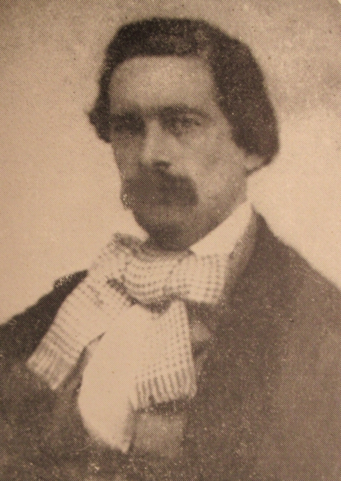

Jean Dorey - "J.D." ou "J.D.R."
1831-1872

Jean Dorey, tchi sîngnait "J.D." ou "Jean Dorey fils" ou "J.D.R.", et étout appathemment (en Jèrriais) "Jean des Ruettes", 'tait înmprînmeux d'vocâtion en ville.
Jean Dorey, fis Jean, fis Nicolas, fis Nicolas, fut né l'27 dé janvyi, 1831, a La Ville ès Nouaux, St. Hélyi. Mais la fanmil'ye 'tait d'originne dé La Blianche Pièrre, St. Louothains, dé vièr temps. Et sèn arbre généalogique (tch'il avait rédigi li-même) montre qué san pèthe en'tait étout. Sa méthe 'tait Anne Martîn, seule fil'ye dé Nicolas Martîn, jr., dé La Rouôl'lie, à La Trinneté.
I' mathyit Jane Éléonore Amy, seule fil'ye dé Jean Amy, fis Ph'lippe, d'La Plianque, La Trinneté, et dé Jeanne Lé Sueux, fil'ye Jean, fis Cliément, d'La Crouaix d'Bouais. Comme fanmil'ye il' avait des fil'yes mais pas d'garçons.
Il êcrivait et composait dans les trais langues - lé Jèrriais, lé Français et l'Angliais. I' fit des p'tites poêsies dé bein des sortes tchi s'fûdrent janmais publiées. Deux'trais d'ses pièches fûdrent quand même împrînmées dans "La Nouvelle Année" - pétite publyicâtion annuelle pour tchique temps d'vant 1870 et auprès - et autrément. Li-méme, par exempl'ye, i' fit pathaitre un p'tit livre (en 1868) appelé "Un Touffet d'Flieurs à Pitchets d'la Vie". Il écrivait en Jèrriais d'l'Êst, fais pûtôt phonétiquement. Y'a étout un mannuscrit: "Les Êchos du Temps Jadis ou Compôsitions Jerriaises en Prôse èt en Rémes" - comme i' dit, "Gliannès par J.D.R." - en date dé 1870. Y'a un tas d'tchi là-d'dans tch'il avait prîns bein d'la peine à r'tchilyi - "des ditons, d's arînmées, des d'vinnâles, ouï-dithes", etc. En Français il écrivit, par exempl'ye, eune "Notice Biographique sur le Rév. Thomas Sivret", d's articl'yes historiques entouor difféthents sujets, etc., et d'aut' choses historiques, en Angliais. I' fit étout hardi d'èrchèrches entouor la fanmil'ye Dorey et plusieurs autres.
I' mouothit en 1872 à l'âge d'eune quarantaine d'années, ayant souffèrt d'eune longue maladie (la conseunmtion) pouor eune affaithe dé dgiex ans. Nou pense tch'i' d'meuthit à St. Hélyi eune bouonne partie d'sa vie.
Ouaithe tch'i' mouothisse tout janne, i' dut êcrithe gentiment les dreines années d'sa vie, en s'pâssant l'temps sans doute.